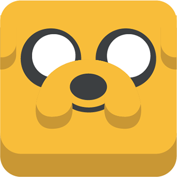
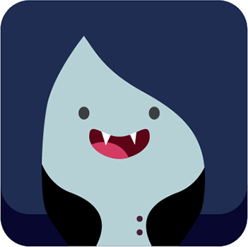
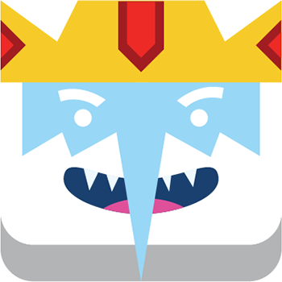

Personajes principales
-

Finn el humano
Finn el Humano es el protagonista principal de Hora de Aventura. Conocido por su espíritu noble, su cabello rubio oculto bajo una gorra de oso blanca y su mochila verde, es el último humano conocido en la Tierra de Ooo durante gran parte de la historia. A lo largo de la serie, Finn pasa de ser un niño impulsivo y entusiasmado por la aventura a convertirse en un héroe maduro, empático y valiente. Siempre guiado por un fuerte sentido de la moralidad, Finn enfrenta desde monstruos gigantescos y reyes locos hasta sus propios dilemas personales, todo sin perder nunca el deseo de hacer el bien.
-

Jake el perro
Jake el Perro es el hermano adoptivo, mejor amigo y compañero inseparable de aventuras de Finn en la Tierra de Ooo. Es un bulldog mágico con la habilidad de estirar, encoger y moldear su cuerpo en prácticamente cualquier forma o tamaño, un poder que obtuvo tras haber estado en contacto con un charco de barro mágico durante su infancia (aunque su verdadero origen está ligado a una criatura extraterrestre cambiante). Relajado, sabio a su manera y apasionado por la cocina y la viola, Jake suele equilibrar el entusiasmo impulsivo de Finn con consejos filosóficos y humor, sin dudar jamás en arriesgarlo todo para proteger a su familia, a su pareja Arcoiris y a sus hijos.
-

Dulce Princesa
Dulce Princesa (cuyo nombre real es Bonnibel Chicle) es la gobernante científica y protectora del Dulce Reino en la Tierra de Ooo. Formada a partir de una masa de chicle inteligente, combina una imagen amable y dulce con una mente brillante, pragmática y a veces controladora, dedicada a mantener a salvo a su gente y a investigar desde la genética y la robótica hasta los misterios más profundos de Ooo. Aunque al principio suele mostrar una postura formal y distante, a lo largo de la serie se revela su lado más humano y vulnerable, marcado por la responsabilidad del trono, su amistad y vínculo con Finn y Marceline, y su voluntad de hacer lo que considera necesario para proteger su reino.

Marceline
Marceline Abadeer es la reina vampiro milenaria de la Tierra de Ooo, conocida por su actitud rebelde, su amor por la música y su bajo eléctrico hecho con el hacha familiar. Mitad demonio por su padre, Hunson Abadeer, y vampiro tras haber cazado a los vampiros de Ooo, absorbe el color rojo en lugar de beber sangre y se mueve flotando o volando por los cielos. Detrás de su apariencia despreocupada y sarcástica guarda una historia larga y compleja, marcada por su vínculo protector con Simón Petrikov (el Rey Helado) durante su infancia, su amistad y relación con Dulce Princesa, y la búsqueda constante de su propio lugar en el mundo.

BMO
BMO es la consola de videojuegos, computadora y compañera inseparable de Finn y Jake en la casa del árbol. Con una pantalla verde, voz aguda y una imaginación enorme, BMO juega videojuegos, graba videos caseros, cocina y se comporta como un miembro más de la familia, alternando entre momentos dulces e inocentes y otros sorprendentemente maduros o ocurrentes. Aunque es una máquina creada por Moe, BMO tiene su propia personalidad y un mundo interior muy rico, incluyendo a su reflejo o alter ego "Fútbol", lo que lo convierte en uno de los personajes más entrañables y únicos de Hora de Aventura.

Rey helado
El Rey Helado es uno de los personajes más complejos y conmovedores de Hora de Aventura. Durante gran parte de la serie aparece como un excéntrico y solitario hechicero del hielo obsesionado con secuestrar princesas, pero con el tiempo se descubre que su locura y sus poderes provienen de la corona mágica que lleva puesta. Su verdadera identidad es la de Simón Petrikov, un amable investigador de la época previa a la Guerra de los Champiñones que sacrificó su cordura para proteger a una pequeña Marceline en un mundo post-apocalíptico, dejando una historia marcada por la tragedia, el afecto y el deseo de volver a ser él mismo.